Archive and restore for Graylog Open: logs leave Graylog as compressed files with SHA256 checksums, and go back into any Graylog when you need them. The same web interface adds an independent audit trail, PDF reports, content packs, security incidents and AI chat.
One Python service with its own web interface, scheduler and SQLite database. It needs to reach Graylog, and OpenSearch for the fast paths; nothing is installed on the Graylog nodes.
Most sites run jt-glogarch on the Graylog VM. Exports and imports watch Graylog's heap, journal and buffers and this host's free memory, and slow down or pause before the box runs short; the dashboard says what size the VM should be.
Run it on a separate VM and point the archive path at NAS or NFS storage. It reads Graylog through the REST API, or OpenSearch directly (about five times faster), over the network.
A Data Node accepts only client certificates. Connect Data Node asks Graylog's own CA for one; jt-glogarch renews it before it expires, so OpenSearch Direct export and Bulk import work as on a plain OpenSearch.
jt-glogarch sits beside Graylog and talks to it through its API and OpenSearch; it never changes how Graylog ingests logs.
Once logs are compressed files with checksums, they serve every one of these.
A policy asks for a year of authentication logs while Graylog keeps 90 days hot: a daily schedule archives the streams that matter to cheap storage.
An incident from six months ago needs a look, long after OpenSearch dropped it: find the hours in the archive list, import, search again.
Move from an old Graylog to a new one: OpenSearch Direct exports the old cluster fast, GELF or Bulk loads the new one. No cloud in between.
Mount remote storage as the archive path and schedule a daily export: searchable history survives the loss of the main cluster.
Archives are about ten times smaller than indexed data, so the live cluster keeps only recent days and older data is minutes away.
The operation audit records what administrators really did in Graylog, in a database Graylog admins cannot touch.
Designed to sit beside a busy Graylog cluster: bounded memory, careful with Graylog's heap, and honest about what it did.
Graylog REST API (works on any Graylog, stream filters) or OpenSearch Direct (about 5× faster, no 10,000-result window).
GELF replays every message through Graylog's inputs, pipelines and streams; OpenSearch Bulk writes them as they were, 5–10× faster.
Records go to .json.gz as they arrive and never pile up in memory; files roll over at 50 MB.
Time already archived is never fetched again, whichever mode archived it; a scheduled run first refills holes left by earlier runs.
A restart or a cancel keeps every finished hour and discards only the hour in progress; the next run continues from there.
Every archive has a SHA256 checksum, re-verified on a schedule; an optional keyed HMAC and an off-box ledger catch a forged file-and-database pair.
Export, cleanup and verify on standard POSIX cron. Changes in the web UI apply at once and every run shows in the job history.
Heap after garbage collection, journal and buffers are read every 15 seconds; exports slow down, pause, and stop once rather than wedge Graylog.
Target capacity, retention and field-type conflicts are checked and fixed before the first message; afterwards indexer failures are reconciled.
Cleanup keeps what the retention says and never deletes a file still being written; the dashboard estimates how many months the disk still holds.
Find records inside archives without restoring them: keyword and field conditions, hits highlighted, CSV or JSON Lines download.
Attach or detach notifications on many Graylog event definitions at once, as the signed-in user, with a preview and undo.
Telegram, Discord, Slack, Microsoft Teams, Nextcloud Talk, Zulip, e-mail and a standard webhook signed with HMAC, in English, Traditional Chinese or Japanese.
Light and dark themes in three languages, plus the glogarch command for scripts; both use the same database.
Reads the Graylog and OpenSearch JVMs running here, their heaps and swap in use, and says how much RAM and how many cores the VM needs.
An upgrade backs up the database first, keeps every schedule running, never shortens a retention, and has an offline bundle for closed networks.
Two ways out and two ways back, freely combined; a switch between modes never stores the same records twice.
.json.gz per hour (rolled at 50 MB), with the field types seen.Turns what Graylog already collects into incidents you can work through, without sending logs anywhere.
The AI analysis of an incident does not let the model choose queries: jt-glogarch runs fixed queries scoped to the incident (counts, top values, successful logins of the same source, a few sample messages) and asks for one JSON verdict. Addresses in the answer that are not in the evidence are flagged.
The model queries Graylog through read-only tools as the signed-in user; every tool call is audited. Off by default.
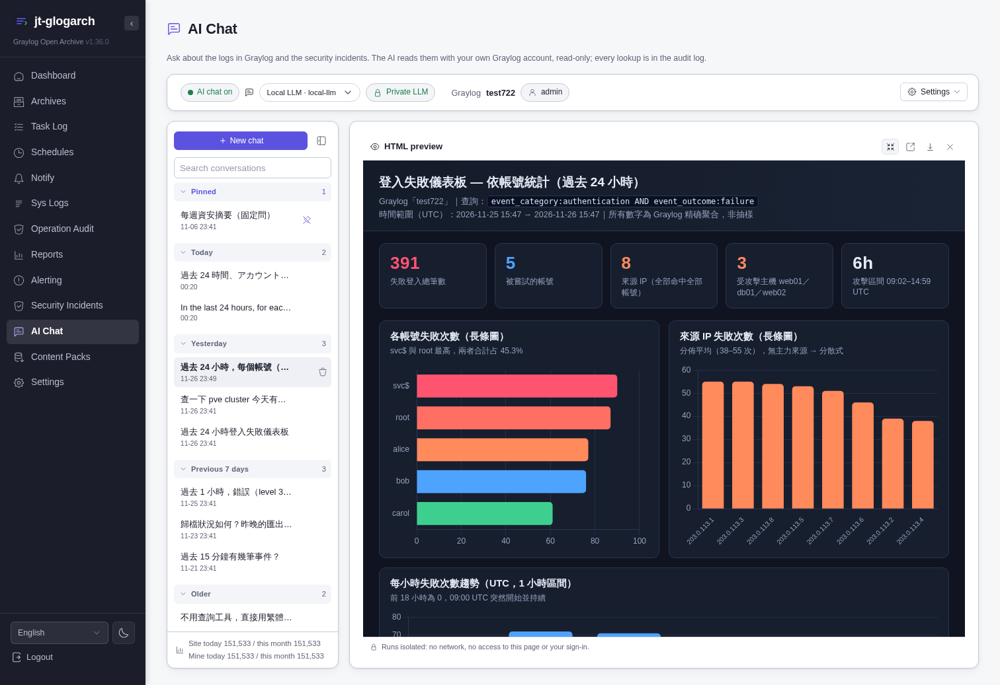
Regulations ask for an administrators' trail. Graylog admins can delete Graylog's own; they cannot delete this one.
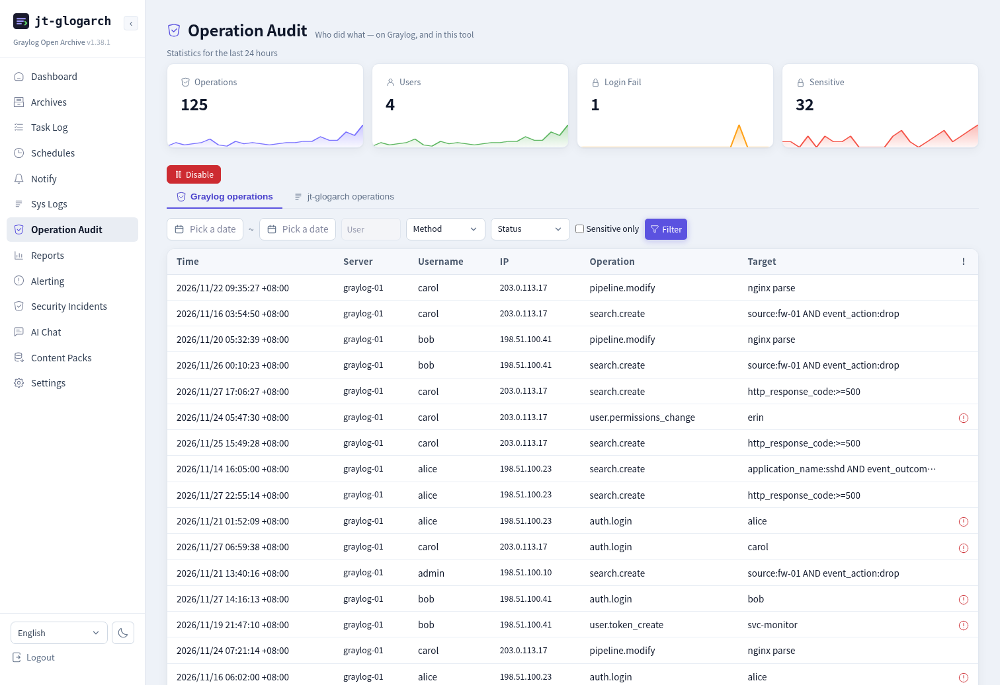
Branded multi-page reports, rebuilt from the data or captured from the screen.
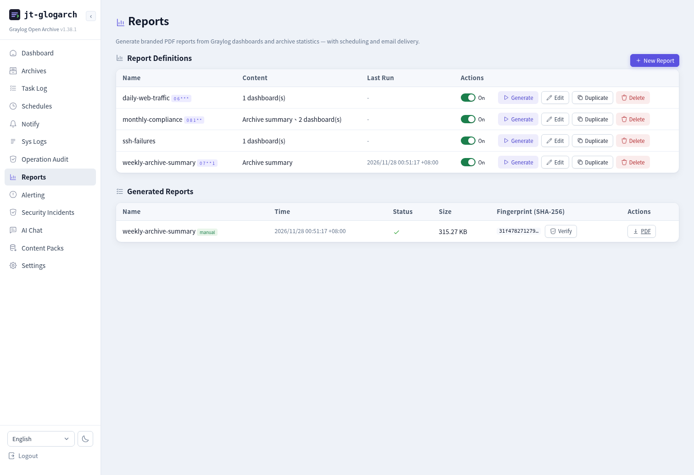
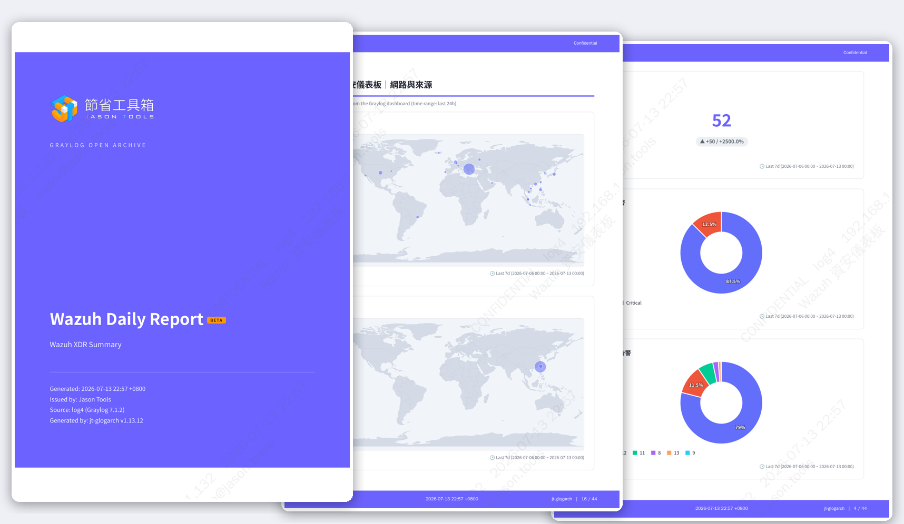
Know what a pack contains before it reaches Graylog.
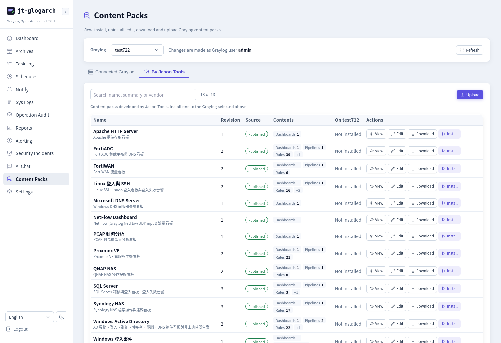
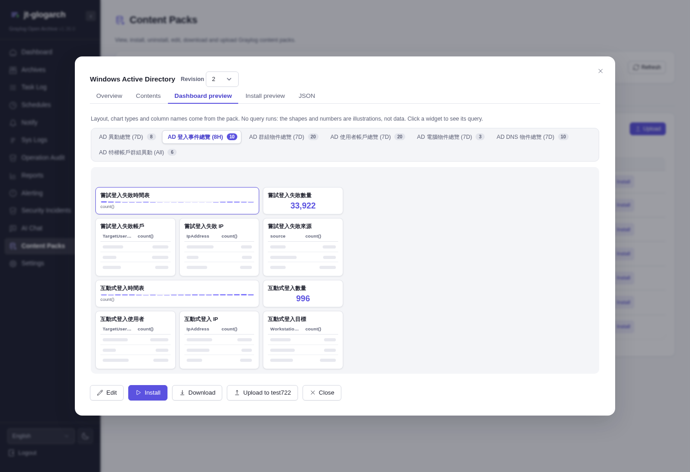
Pipelines into GIM fields, dashboards and alerts; no pack touches another pack’s records. Other packs are provided by Jason Tools separately and are not part of this repository.
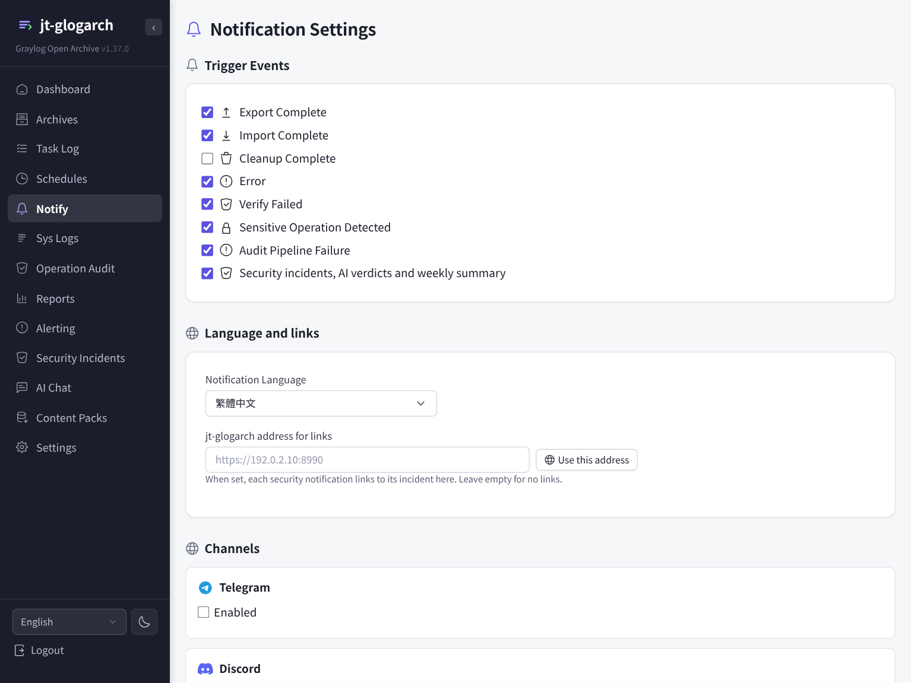
One list of channels for every kind of message.
Everything it talks to is listed here; nothing else is contacted.
REST API for export, alerting, packs and dashboards; GELF TCP input for import; logins with Graylog accounts (Admin role by default).
OpenSearch 2.x and 3.x directly for fast export and Bulk import, with host failover; Graylog 7 Data Node through a certificate from Graylog.
The reverse proxy in front of Graylog sends its access log by syslog; the web UI gives you the exact log format to paste.
llama.cpp, vLLM, LM Studio, Ollama or any OpenAI-compatible server, and the Claude API; several at once, picked per question.
External AI tools use the same read-only Graylog tools at /mcp with a Graylog token, rate-limited and audited.
Spamhaus DROP, Tor exit nodes and abuse.ch Feodo for threat intelligence, and the SigmaHQ rule library. All off until you enable them.
The tool holds credentials to your logging platform, so it is built and checked accordingly.
Runs as its own jt-glogarch user under systemd; the web UI is HTTPS on 8990 with a self-signed certificate you can replace.
Valid Graylog credentials are not enough: the account needs an allowed role (Admin by default). A local backup account works when Graylog is down.
Passwords and tokens are stripped from job notes, audit details and errors before they are stored, and never sent back to the browser.
Static analysis (Bandit), an OWASP ZAP scan of the web UI, whole-tree checks for known failure classes, and a CycloneDX SBOM.
Security analysis, AI chat, MCP, threat intelligence and the Sigma library are all off by default: an upgrade never starts them.
Logs are never sent to a third party. LLM servers are internal by default; previews run sandboxed without network access.
Light and dark themes, English, Traditional Chinese and Japanese. Click to enlarge.
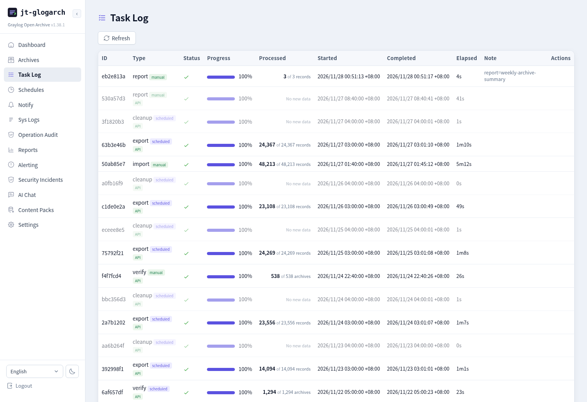
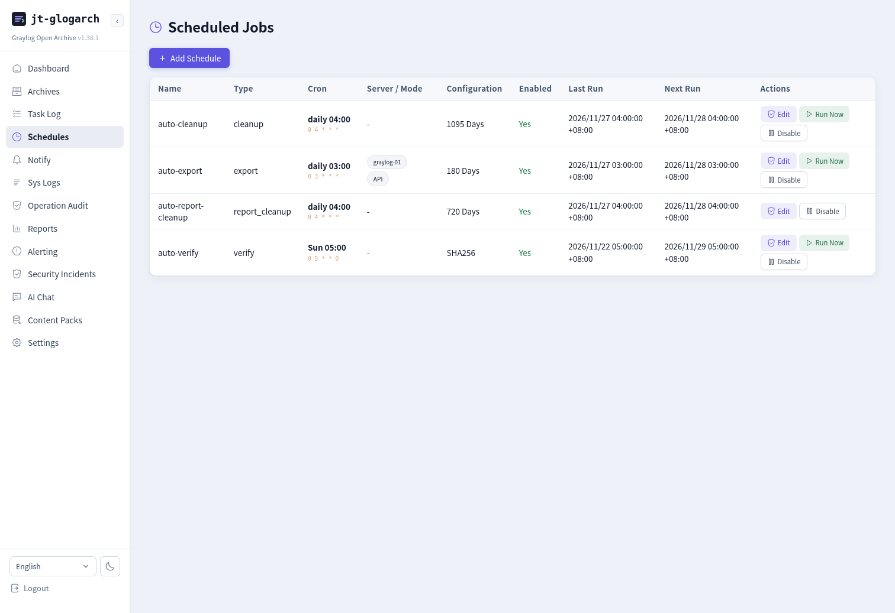
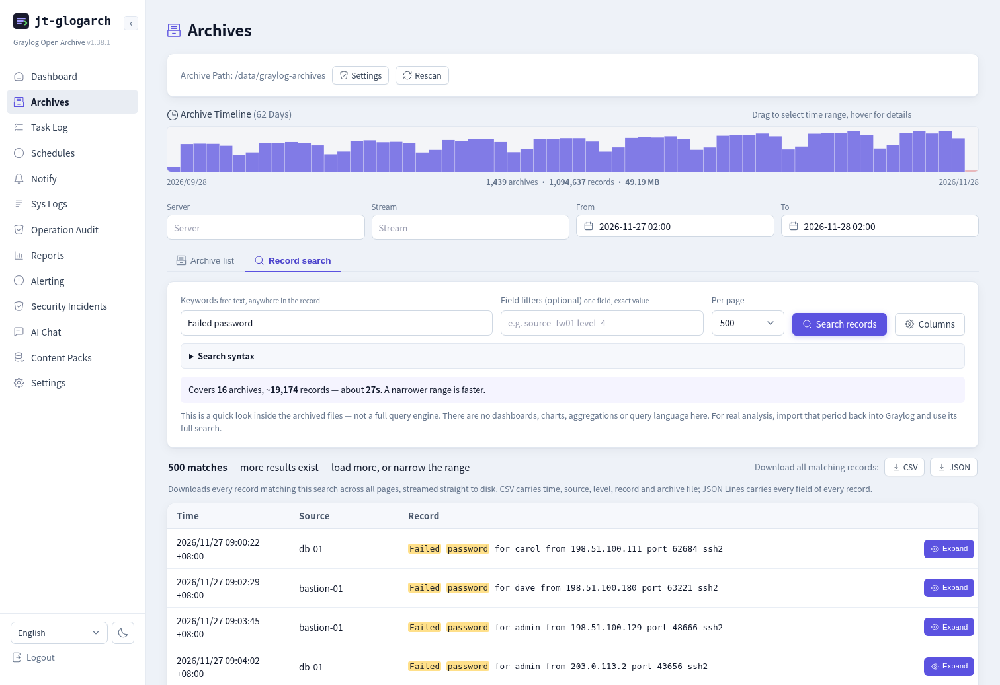
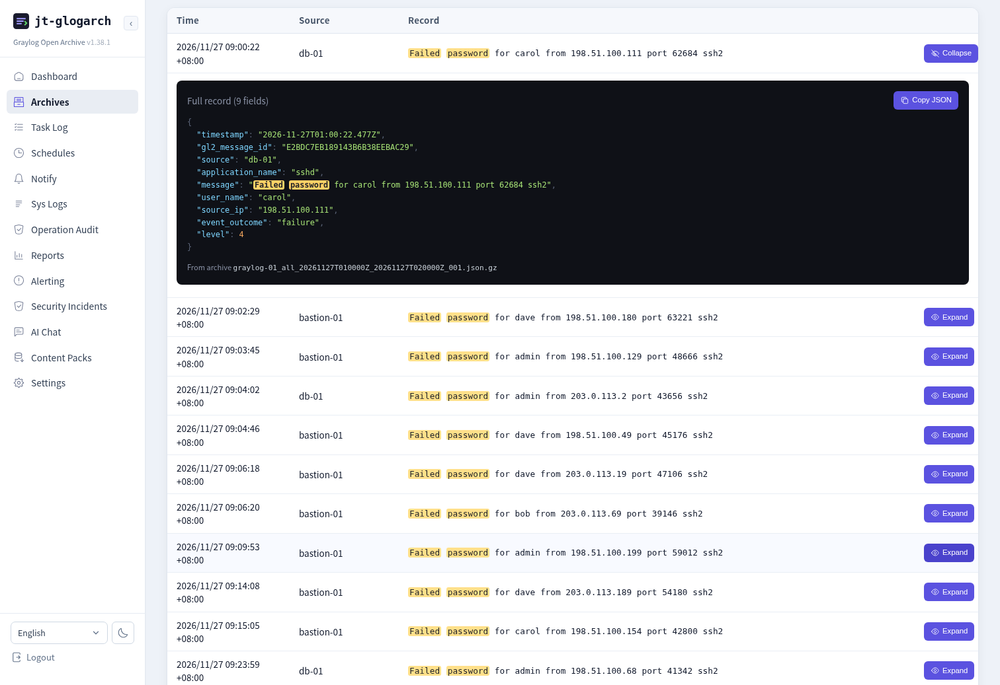
One installer for online and offline installs; the service runs as soon as it finishes.
Step-by-step setup, every setting and the FAQ are in the README: README · CONFIG · TESTING
Linux with Python 3.10 or newer, pip and git. The web UI starts on HTTPS port 8990 and a setup wizard asks for the Graylog connection.
# clone, then let the installer create the user, the service and a certificate
sudo git clone https://github.com/jasoncheng7115/jt-glogarch.git /opt/jt-glogarch
sudo bash /opt/jt-glogarch/deploy/install.sh/opt/jt-glogarch, service jt-glogarch/opt/jt-glogarch/config.yaml/data/graylog-archives (any mounted path)journalctl -u jt-glogarch -fUpgrades are designed to keep the data, keep the service usable and keep scheduled archiving running; each release is tested against state written by older ones.
# backs up the database first, then upgrades and checks the service
sudo bash /opt/jt-glogarch/deploy/upgrade.shNot possible to fast-forward? See the FAQ in the README: one git reset fixes clones made before 2026-09-13Build a bundle where there is internet access and carry it in: the program, every dependency wheel and the PDF engine's browser, installed with no network at all.
# where there is internet (same Python and CPU type as the target) bash scripts/build-offline-bundle.sh # on the closed-network host, after checking the sha256 sudo bash install-offline.sh # first install sudo bash upgrade-offline.sh # upgrade
What it needs and what it opens.
Linux with systemd
measured on 6.3 to 7.2
what listens here
about 10× smaller than the indexed data
glogarch db-backupglogarch db-rebuildinterface, notifications and reports
AGPL-3.0-or-later